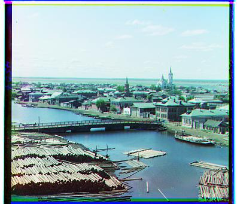
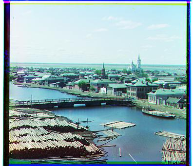

In this project, we reconstruct RGB images from colorized glass plates using color-based image alignment.
Specifically, our goal is to determine a "roll" or an offset such that the digitized glass plates align,
and then recreate the color image from the overlayed plates.
We used the approach described in CS194-26: use the blue plate as the anchor,
and then minimize the distance metric. We used three different metrics for varying results:
$$ SSD(A,B) = \sum_{i=1}^{width} \sum_{j=1}^{height} (A_{ij} - B_{ij})^2 $$
where $ \circ $ represents an element-wise Hadamard product.
$$ NCC(A,B) = - \frac{a}{\vert \vert a \vert \vert} \cdot \frac{b}{\vert \vert b \vert \vert} $$
where $ a $ and $ b $ represent the flattened vectors of A and B.
$$ LaplacianDiff(A,B) = SSD(Laplacian(A), Laplacian(B)), where $$
$$ Laplacian(f) = \frac{\partial^2 f}{\partial x^2} + \frac{\partial^2 f}{\partial y^2} $$
Note the above, where I used a gradient-based approach to determine the alignment.
Below, we summarize the dataset we have generated from the glass plates:
| Image File Name | Best Method Used | Optimal Red Shift | Optimal Green Shift | Looks Pretty? | Large |
|---|---|---|---|---|---|
| icon.tif | SSD | 89, 22 | 42, 16 | Yes | Yes |
| lady.tif | NCC | 123, -17 | 57, -6 | Maybe | Yes |
| melons.tif | SSD | 176, 7 | 83, 4 | Yes | Yes |
| three_generations.tif | SSD | 108, 7 | 52, 5 | Yes | Yes |
| emir.tif | NCC | 107, 17 | -3, 7 | No | Yes |
| harvesters.tif | LAP | 123, 12 | 60, 14 | Yes | Yes |
| onion_church.tif | LAP | 107, 34 | 52, 20 | Yes | Yes |
| self_portrait.tif | LAP | 175, 37 | 74, 25 | Yes | Yes |
| train.tif | LAP | 85, 28 | 38, 2 | Yes | Yes |
| turkmen.tif | LAP | 117, 29 | 57, 22 | Yes | Yes |
| kura_river.tif | LAP | 155, 10 | 66, 13 | Yes | Yes |
| sawmill.tif | LAP | 74, 0 | 12, 3 | Yes | Yes |
| cityscape.tif | LAP | 40, -24 | 0, -10 | Yes | Yes |
| village.tif | LAP | 273, -14 | 65, 11 | No | Yes |
| cathedral.jpg | SSD | 7, -1 | 1, -1 | Yes | No |
| monastery.jpg | LAP | 3, 2 | -3, 2 | Yes | No |
| nativity.jpg | NCC | 7, 1 | 3, 1 | Yes | No |
| tobolsk.jpg | NCC | 6, 3 | 3, 2 | Yes | No |
| settlers.jpg | SSD | 14, -1 | 7, 0 | Yes | No |
The algorithm failed to align a few images due to issues with color balance and the margins.
If I had more time, I would experiment with grayscale balance and normalization to match darker and lighter values together.
Furthermore, I would cut off a predefined margin or programmatically determine an appropriate margin,
which often weighs heavily in the non-gradient distance measures.
Colorized Large Images


My Own Selected Images

Colorized Small Images


 
